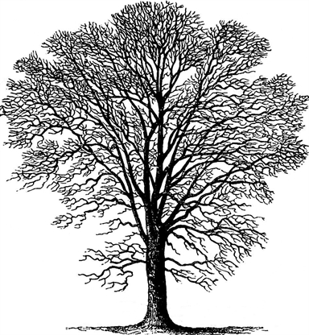

TRANSE GENERATION
(dette inconsciente)
"En résumé, j'aimerais avoir un message un peu positif à vous transmettre. Je n'en ai pas... Est-ce que deux messages négatifs, ça vous irait ?" Woody ALLEN
Le transgénérationnel se définit comme le lien psychique entre les membres de la famille et leurs ancêtres et aïeux, de lignées directes ou collatérales. Dans cette dimension, ces derniers ont vécu des évènements et/ou actes traumatiques qui sont restés souvent occultes mais quelquefois ont été connus. Les stigmates de ces traumas sont portés par les héritiers de la génération suivante, enfouies dans leur inconscient. Pourtant, il est fréquent que les détenteurs de précisions sur ces évènements s’interdisent de les évoquer et qu’ils interdisent aux autres de poser des questions les concernant. Plus encore, ceux-ci ne doivent rien vouloir savoir sur les protagonistes en question. Ce sont les fameux secrets de famille. Cela entrave la curiosité, la recherche de la vérité, la capacité à pouvoir vivre une existence familiale sereine. S’ensuivent des troubles de la communication familiale. Sous l’effet des pactes de déni, la vie familiale devient factuelle, bloquée, inauthentique voire symptômatique. Se manifeste des identifications incompréhensibles chez certains membres qui peuvent prendre étonnamment pour modèles ces mêmes personnages que l’on a voulu effacer de la mémoire collective.
Parfois, par le biais de ce système de transmission, la souffrance évoquée d'un membre, ne trouve pas de traitement "classique", n'’identifiant pas d’événements traumatiques majeurs ou de raisons d’aller si mal. Alors une piste de résolution est de questionner l’histoire familiale et sa passation. La clé de l’énigme y est parfois trouvée. Car on peut avoir hérité des traumatismes de ses descendants, sans en être conscient. La transgénération, c'est la génération succédante qui devient dépositaire d’une souffrance qui ne lui appartient pas, mais dont elle révèle la persistance. Et cette transmission commence par un prénom. Freud l'évoquait déjà par le choix du prénom d'un enfant par ses parents : "leurs noms font des enfants des revenants". Qui n'a pas le prénom d'un oncle, d'un grand parent, d'un aïeul ? Je vous rassure, le choix orienté du prénom n'est pas un symptôme mais souvent une tradition.
Parfois, par le biais de ce système de transmission, la souffrance évoquée d'un membre, ne trouve pas de traitement "classique", n'’identifiant pas d’événements traumatiques majeurs ou de raisons d’aller si mal. Alors une piste de résolution est de questionner l’histoire familiale et sa passation. La clé de l’énigme y est parfois trouvée. Car on peut avoir hérité des traumatismes de ses descendants, sans en être conscient. La transgénération, c'est la génération succédante qui devient dépositaire d’une souffrance qui ne lui appartient pas, mais dont elle révèle la persistance. Et cette transmission commence par un prénom. Freud l'évoquait déjà par le choix du prénom d'un enfant par ses parents : "leurs noms font des enfants des revenants". Qui n'a pas le prénom d'un oncle, d'un grand parent, d'un aïeul ? Je vous rassure, le choix orienté du prénom n'est pas un symptôme mais souvent une tradition.

Illustrons ici que l’être humain est d’abord constitué par une dette symbolique, sa naissance et la transmission familiale qui s'y rapporte. Voyons cela comme un tribut que son tributaire n’a pas contracté et pourtant il se sent redevable de rembourser, souvent à perte. On va y inclure aussi les autres dettes. Être en dette pour soi mais pas seulement car le destin de l’humain est également d’éponger les dettes de l’Autre, Vanité, donc, d’en finir avec la dette… Et, avec quoi payer ? Quelle est la monnaie de la dette ? Essentiellement de la souffrance… payer de sa personne !
Ainsi le sujet redevable se substitue à l’Autre, le vrai débiteur, pour payer la dette non destinée en établissant la fixation d’un "juste prix" à payer pour s’en acquitter. Cette dette se veut bien souvent "inconsciemment inhonorable", permettant ainsi de maintenir un solide menottage, un attachement forcé auprès du débiteur et/ou du créancier. Elle pourrait ainsi être considérée comme un maillon de relation, maillon d'une chaine où le lieu de l'ancrage a été omis, entrainant une errance, un non sens ou encore une absence de position. L'endettement inconscient oblige inéluctablement un paiement sans fin usitant une monnaie métaphorique qui pourrait être le symptôme dépression, addiction, blocage, etc.) ou encore une forme d'inertie existentielle que subit le supplicié pour faire valoir le droit d'intégrer la famille. Et quand on se fixe sur le symptôme, on contribue à fixer le symptôme.
L'hypnose explore, classe et redéfinit une forme de réalité biographique : ce qui vous appartient de votre histoire et ce qui ne vous appartient pas, afin de ne pas "payer" pour rien!
Ainsi le sujet redevable se substitue à l’Autre, le vrai débiteur, pour payer la dette non destinée en établissant la fixation d’un "juste prix" à payer pour s’en acquitter. Cette dette se veut bien souvent "inconsciemment inhonorable", permettant ainsi de maintenir un solide menottage, un attachement forcé auprès du débiteur et/ou du créancier. Elle pourrait ainsi être considérée comme un maillon de relation, maillon d'une chaine où le lieu de l'ancrage a été omis, entrainant une errance, un non sens ou encore une absence de position. L'endettement inconscient oblige inéluctablement un paiement sans fin usitant une monnaie métaphorique qui pourrait être le symptôme dépression, addiction, blocage, etc.) ou encore une forme d'inertie existentielle que subit le supplicié pour faire valoir le droit d'intégrer la famille. Et quand on se fixe sur le symptôme, on contribue à fixer le symptôme.
L'hypnose explore, classe et redéfinit une forme de réalité biographique : ce qui vous appartient de votre histoire et ce qui ne vous appartient pas, afin de ne pas "payer" pour rien!

EN RELATION
VALEUR
CROYANCE

SECRET
TRAHISON
(famille)
IDENTITE
(NON) CHOIX
LEGITIMITE